2025年北京市大兴区中考生物真题 原卷解析
2025年北京市初中学业水平考试
生物学试卷（大兴卷）
2025.06
考生须知
1.本试卷共8页，共两部分，30道小题。满分60分。考试时间70分钟。
2.在试卷和答题卡上准确填写学校名称、班级、姓名和准考证号。
3.试题答案一律填涂或书写在答题卡上，在试卷上作答无效。
4.在答题卡上，选择题用2B铅笔作答，其他题用黑色字迹签字笔作答。
5.考试结束，将本试卷，答题卡一并交回。
第一部分
本部分共25题，每题1分，共25分。在每题所列的四个选项中，选出最符合题目要求的一项。
1. 白唇鹿是国家一级保护野生动物，其结构和功能的基本单位是（ ）
A. 细胞B. 组织C. 器官D. 系统
【答案】A
【解析】
【分析】根据细胞学说，除病毒外，所有生物体的结构和功能基本单位都是细胞。
【详解】A．细胞是构成生物体的基本单位，所有生命活动均以细胞为基础，故A符合题意。
B．组织由形态相似、功能相同的细胞联合形成，属于更高层次的结构，故B不符合题意。
C．器官由不同组织构成，并非基本单位，故C不符合题意。
D．系统由多个器官组成，属于动物体的最高结构层次之一，故D不符合题意。
故选A。
2. 制作洋葱鳞片叶表皮细胞临时装片时，用于染色 试剂是（ ）
试剂是（ ）
A. 清水B. 稀释的碘液
C. 生理盐水D. 酒精
【答案】B
【解析】
【分析】制作洋葱鳞片叶表皮细胞临时装片的步骤为：擦（载玻片和盖玻片）、滴（清水）、撕（取内表皮）、展（平铺）、盖（盖玻片）、染（染色）。染色是为了使细胞结构更清晰，便于观察。
【详解】A．清水用于维持细胞形态，而非染色，故A不符合题意。
B．稀释的碘液是常用染色剂，可使细胞核着色，便于观察细胞结构，故B符合题意。
C．生理盐水用于动物细胞（如口腔上皮细胞）的形态维持，与染色无关，故C不符合题意。
D．酒精通常用于脱色或消毒，不用于染色，故D不符合题意。
故选B。
3. 用显微镜观察人口腔上皮细胞时，发现有气泡，可能是哪个步骤操作出现错误（ ）
A 擦拭载玻片和盖玻片B. 滴加生理盐水
擦拭载玻片和盖玻片B. 滴加生理盐水
C. 加盖盖玻片D. 染色
【答案】C
【解析】
【分析】制作人的口腔上皮细胞临时装片的步骤简要的概括为：擦、滴、刮、抹、盖、染、吸。
【详解】A．擦拭载玻片和盖玻片是为了清洁，未擦拭会导致污渍而非气泡，故A不符合题意。
B．滴加生理盐水可维持细胞形态，若未滴加或滴加错误液体会影响细胞形态，但不会直接产生气泡，故B不符合题意。
C．在盖盖玻片时，用镊子夹起盖玻片一角，使其一边先接触载玻片上的液滴，然后缓缓放下，目的是避免盖玻片下面出现气泡；因此如果该操作不当，装片中容易产生气泡，故C符合题意。
D．染色是通过碘液使细胞结构更清晰，操作不当可能影响观察效果，但不会引入气泡，故D不符合题意。
故选C。
4. 下图所示为人的胚胎干细胞产生不同类型细胞的过程，这一过程称为（ ）
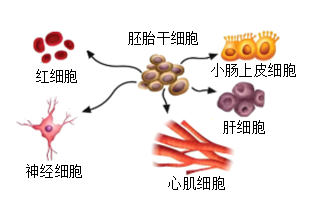
A. 细胞分裂B. 细胞分化
C. 细胞生长D. 细胞死亡
【答案】B
【解析】
【分析】在个体发育过程中，一个或一种细胞通过分裂产生的后代，在形态、结构和生理功能上发生差异性的变化，这个过程叫作细胞分化。细胞分化产生了不同的细胞群。所以，人的造血干细胞产生不同类型血细胞的过程，称为细胞分化。
【详解】A．细胞分裂就是一个细胞分成两个细胞的过程，细胞分裂使细胞数目增多，故A不符合题意。
B．在个体发育过程中，一个或一种细胞通过分裂产生的后代，在形态、结构和生理功能上发生差异性的变化，这个过程叫作细胞分化。细胞分化产生了不同的细胞群。所以，人的胚胎干细胞产生不同类型细胞的过程，称为细胞分化，故B符合题意。
C．新分裂产生的细胞体积很小，需要不断从周围环境中吸收营养物质，并且转变成组成自身的物质，体积逐渐增大，这就是细胞的生长，故C不符合题意。
D．细胞死亡是指细胞由于内在或外在因素的作用，导致细胞结构和功能不可逆性丧失的过程，故D不符合题意。
故选B。
5. 下图是人体的四种基本组织，属于上皮组织的是（ ）
A.
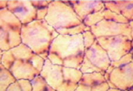
B. 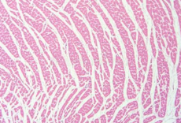
C.
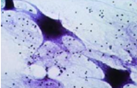
D. 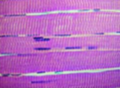
【答案】A
【解析】
【分析】动物体基本组织有：上皮组织、肌肉组织、神经组织、结缔组织，各具有不同的功能。
【详解】A．图中A是上皮组织，由上皮细胞构成。分布在体表、呼吸道和消化道内壁，血管壁等；具有保护和分泌等功能，A符合题意。
B．图中B是肌肉组织，肌肉组织：由肌细胞构成。分布在骨骼、心脏、胃、肠、血管等处；具有收缩、舒张功能，B不符合题意。
C．图中C是神经组织，由神经细胞（或简称神经元）构成；分布在脑、脊髓以及神经中；能产生和传导兴奋，C不符合题意。
D．图中D是结缔组织，种类很多，分布广泛，如骨、血液、脂肪等；具有支持、连接、保护和营养等功能，D不符合题意。
故选A。
6. 在人体的结构层次中，肝脏属于（ ）
A. 细胞B. 组织C. 器官D. 系统
【答案】C
【解析】
【分析】动物体的结构层次由小到大依次是细胞→组织→器官→系统→动物体。
【详解】肝脏是由不同的组织按照一定的次序结合在一起形成具有一定功能的，属于器官，因此ABD错误，C正确。
故选C。
7. 根据下图所示的实验装置，可以探究植物的光合作用需要（ ）
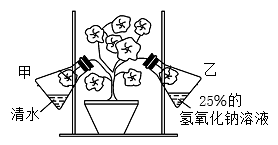
A. 水B. 二氧化碳C. 有机物D. 氧气
【答案】B
【解析】
【分析】绿色植物的光合作用通过叶绿体利用光能把二氧化碳和水转变成储存能量的有机物并释放出氧气。
【详解】光合作用的原料是水和二氧化碳，产物是氧气和淀粉。乙瓶内空气中的二氧化碳被氢氧化钠溶液吸收，玻璃瓶中的叶片得不到二氧化碳；甲玻璃瓶中的叶片可以正常吸收二氧化碳。故此实验变量是二氧化碳，可以探究植物的光合作用需要二氧化碳，ACD错误，B正确。
故选B。
8. 2021年，我国科学家在实验室实现了由二氧化碳到淀粉的人工合成全过程，这是生物合成领域的里程碑式突破，在植物细胞中，能够合成淀粉的结构是（ ）
A. 细胞质B. 线粒体C. 叶绿体D. 液泡
【答案】C
【解析】
【分析】植物细胞的基本结构包括细胞壁、细胞膜、细胞核、细胞质、线粒体、液泡、叶绿体（绿色部分），不同的结构功能不同。
【详解】A．细胞质是细胞代谢的主要场所，但淀粉的合成由光合作用相关结构完成，故A不符合题意。
B．线粒体负责呼吸作用分解有机物，与合成淀粉无关，故B不符合题意。
C．叶绿体是光合作用的场所，能将二氧化碳和水转化为淀粉，并释放氧气，故C符合题意。
D．液泡是植物细胞中的一个重要结构，它主要存储水分和溶解在水中的矿物质，以及糖类、蛋白质、色素和有机物等物质。但液泡并不是光合作用的场所，故D不符合题意。
故选C。
9. 北京市大兴区素有“中国西瓜之乡”的美誉，西瓜种植过程中可通过合理密植来提高产量，原因是（ ）
A. 可以充分利用光照，促进光合作用
B. 可以保护西瓜叶片
C. 可以保护西瓜植株的根
D. 可以使西瓜吸收更多的氧气
【答案】A
【解析】
【分析】光合作用是指绿色植物通过叶绿体，利用光能，把二氧化碳和水转化成储存能量的有机物（如淀粉），并且释放出氧气的过程。光合作用的实质是制造有机物，释放氧气，把光能转变为化学能储存在有机物中；光合作用的原料是二氧化碳和水；光合作用的条件是光；光合作用的产物是氧气和有机物。
【详解】合理密植是使植株行间距和株距科学合理，使植物的叶片互不遮挡，通过植物的光合作用，充分有效利用这片土地上的光能，来提高产量。所以合理密植是利用光合作用，以增加作物产量的措施，A符合题意，BCD不符合题意。
故选A。
10. 取一段带叶的杨树枝条，将下端插入滴有红墨水的水中，过一段时间枝条的一部分变红了，变红的部分是（ ）
A. 韧皮部B. 形成层C. 筛管D. 导管
【答案】D
【解析】
【分析】植物体内运输水分和无机盐的结构是导管，位于木质部；筛管位于韧皮部，运输有机物。形成层为分生组织，不参与运输。
【详解】A．韧皮部内含筛管，负责自上而下运输有机物，与题干中红墨水（水分）运输无关，故A不符合题意。
B．形成层属于分生组织，促进茎的加粗，无运输功能，故B不符合题意。
C．筛管是韧皮部中运输有机物的结构，与水分运输无关，故C不符合题意。
D．导管位于木质部，运输水和无机盐，方向自下而上。红墨水通过导管运输导致枝条变红，故D符合题意。
故选D。
11. 土豆中的有机物是由叶通过光合作用合成的，这些有机物通过下列哪一结构运输到块茎中（ ）
A. 筛管B. 导管C. 木质部D. 形成层
【答案】A
【解析】
【分析】植物体内运输有机物的结构是筛管，属于韧皮部；导管运输水和无机盐，属于木质部。形成层与有机物运输无关。
【详解】A．筛管负责运输有机物，A符合题意。
B．导管运输水和无机盐，B不符合题意。
C．木质部包含导管，运输水和无机盐，C不符合题意。
D．形成层与植物增粗有关，不参与运输，D不符合题意。
故选A。
12. 2023年，科研人员在西藏林芝市发现了一棵高达102.3米的西藏柏木，成为“中国最高的树”，其根吸收的水分被运送到树顶的动力是（ ）
A. 蒸腾作用B. 光合作用
C. 呼吸作用D. 吸收作用
【答案】A
【解析】
【分析】植物体内水分运输的动力主要来自蒸腾作用产生的拉力。蒸腾作用使水分从叶片气孔散失，形成负压，促使根吸收的水分通过导管向上运输至植物顶端。
【详解】A．蒸腾作用产生的拉力是水分上升的主要动力，故A符合题意。
B．光合作用用于合成有机物并储存能量，与水分运输无直接关系，故B不符合题意。
C．呼吸作用释放能量供生命活动使用，不直接提供水分运输动力，故C不符合题意。
D．吸收作用指根吸收水分和无机盐，但无法解释水分向上运输的动力，故D不符合题意。
故选A。
13. 下图是探究种子呼吸的相关实验，下列相关叙述正确的是（ ）
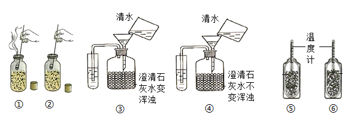
A. ②④⑥内分别装有萌发的种子
B. ①②两组实验结果说明萌发的种子呼吸产生二氧化碳
C. ③④两组实验结果说明萌发的种子呼吸消耗氧气
D. ⑤⑥两组实验结果说明萌发的种子呼吸时释放热量
【答案】D
【解析】
【分析】呼吸作用是指细胞利用氧，将有机物分解成二氧化碳和水，并将储存在有机物中的能量释放出来，供生命活动需要的过程。
【详解】A．萌发的种子呼吸作用旺盛，呼吸作用消耗氧气，产生二氧化碳，并释放能量，因此，①③⑤内装的是萌发的种子，可以进行呼吸作用；②④⑥内分别装有煮熟的种子，不能进行呼吸作用，A错误。
B．氧气有助燃作用，①内的蜡烛熄灭，②内的蜡烛燃烧，说明萌发的种子呼吸消耗了氧气，B错误。
C．二氧化碳能使澄清的石灰水变浑浊，③内的澄清石灰水变浑浊，④内的澄清石灰水不变浑浊，两组实验结果说明萌发的种子释放了二氧化碳，C错误。
D．⑤内的温度升高，⑥内的温度不变，⑤⑥两组实验结果说明萌发的种子呼吸时释放热量，D正确。
故选D。
14. 玉米是我国北方地区重要的粮食作物，下列有利于玉米贮存的做法是（ ）
A. 贮存前进行晾晒
B. 贮存时保持室内温暖
C. 贮存时保持室内潮湿
D. 贮存时增加室内氧气量
【答案】A
【解析】
【分析】有利于贮藏粮食的条件是干燥、低温和缺氧。在这样的条件下，种子的呼吸作用最微弱，种子呼吸作用消耗的有机物最少，有可能渡过最长时间的休眠期。如果湿度大、温度高、氧气充足，种子的呼吸作用强，种子内贮存的有机养料将会通过种子的呼吸作用而大量消耗，种子的贮藏期限也就必然会缩短。
【详解】A．贮存前晾晒可减少玉米水分，抑制呼吸作用，避免种子萌发，利于贮存，故A符合题意。
B．温暖环境会增强呼吸作用，加速有机物分解，故B不符合题意。
C．潮湿环境增加水分，促进呼吸作用，易导致霉变，故C不符合题意。
D．增加氧气会促进有氧呼吸，消耗更多有机物，故D不符合题意
故选A。
15. 下图是“探究唾液的消化作用”实验示意图，下列相关叙述错误的是（ ）
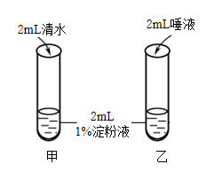
A. 两试管应静置于37℃条件下一段时间
B. 滴加碘液后，甲试管内液体变蓝
C. 滴加碘液后，乙试管内液体不变蓝
D. 该实验证明了唾液能将淀粉消化为葡萄糖
【答案】D
【解析】
【分析】对照实验：在探究某种条件对研究对象的影响时，对研究对象进行的除了该条件不同以外，其他条件都相同的实验。根据变量设置一组对照实验，使实验结果具有说服力。一般来说，对实验变量进行处理的，就是实验组。没有处理的就是对照组。唾液中的唾液淀粉酶将馒头中的淀粉分解成麦芽糖；淀粉遇碘变蓝色是淀粉的特性，因此常用碘液来验证淀粉的存在。
【详解】A．将甲乙两试管放在37℃的温水中，是为了与口腔内温度保持一致，因为唾液淀粉酶在此温度下活性最强，故A正确。
BC．乙试管中唾液淀粉酶将馒头中的淀粉全部分解了，因此滴加碘液不变蓝；甲试管中清水对淀粉没有分解作用，因此滴加碘液会变蓝，BC正确。
D．结论是唾液能将淀粉分解，而不能得出被分解为何产物，D错误。
故选D。
16. 下图为人体小肠结构模式图，下列相关叙述错误的是（ ）
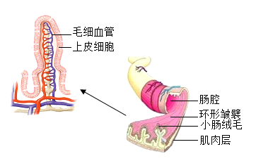
A. 环形皱襞可使小肠的吸收面积增大
B. 小肠绒毛的表面由一层上皮细胞构成
C. 小肠绒毛内分布着大量的毛细血管，有利于物质消化
D. 小肠内有多种消化酶，能够消化多种营养物质
【答案】C
【解析】
【分析】小肠适于消化和吸收的特点：小肠是消化道中最长的一段，一般有5～6米长，增大了吸收营养物质的面积；小肠壁内表面有很多环形皱襞，皱襞上有很多小肠绒毛，增大了消化吸收营养物质的面积；小肠绒毛壁、毛细血管壁、毛细淋巴管壁都很薄，只由1层细胞组成，有利于营养物质的吸收；小肠里有肠液、胰液、胆汁有利于营养物质的消化。
【详解】A．小肠壁内表面有很多环形皱襞，皱襞上有很多小肠绒毛，增大了消化吸收营养物质的面积，A正确。
B．小肠绒毛壁很薄只有1层细胞组成，有利于营养物质的吸收，B正确。
C．小肠绒毛内有大量的毛细血管和毛细淋巴管，有利于营养物质的吸收，C错误。
D．小肠里有肠液、胰液、胆汁3种消化液，其中肠液和胰液含有多种消化酶，能分解淀粉、蛋白质、脂肪，D正确。
故选C。
17. 学习了人的营养相关知识后，某同学设计了一份午餐食谱：米饭、糖醋鱼、小炒牛肉、鸡蛋汤，要使这份食谱的营养搭配更合理，应该添加（ ）
A. 清炒西兰花B. 煎鸡蛋
C. 面条D. 可乐
【答案】A
【解析】
【分析】合理营养是指全面而平衡营养。“全面”是指摄取的营养素种类要齐全；“平衡”是指摄取的各种营养素的量要适合，与身体的需要保持平衡。为了做到合理营养，按“平衡膳食宝塔”均衡摄取五类食物，以避免营养不良和营养过剩。
【详解】A．清炒西兰花属于蔬菜，富含维生素和膳食纤维，可弥补食谱的不足，故A符合题意。
B．煎鸡蛋主要提供蛋白质，但食谱中已有鱼、牛肉和鸡蛋汤，蛋白质已充足，故B不符合题意。
C．面条属于谷物类，与米饭重复提供碳水化合物，故C不符合题意。
D．可乐含糖量高，无益于营养均衡，故D不符合题意。
故选A
18. 下图为人体心脏内部结构示意图，下列相关叙述错误的是（ ）
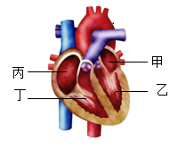
A. 心肌收缩为血液循环提供动力
B. 房、室间的瓣膜可以防止血液倒流
C. 乙的壁最厚，收缩时提供的动力最大
D. 丙和丁内流的都是动脉血
【答案】D
【解析】
【分析】心脏为人体的血液循环提供动力，心脏主要由心肌组成，心脏壁主要由肌肉组织构成。心脏有四个腔，甲是左心房、乙是左心室、丙是右心房、丁是右心室。
【详解】A．心肌收缩将血液挤出心脏，为血液循环提供动力，A正确。
B．房、室间的瓣膜称为房室瓣，可使血液只由心房流向心室，防止血液倒流，B正确。
C．心脏壁越厚，肌肉越发达，收缩和舒张就越有力。心室的收缩把血液输送到全身的毛细血管或肺部的毛细血管，而心房的收缩只需要把血液送入心室。因此，与心室及心房各自所承担的功能相适应，心室的壁就比心房的壁厚。同样的道理，左心室的收缩把血液输送到全身，而右心室的收缩把血液输送到肺，二者相比，左心室输送血液的距离长，与此相适应，左心室的壁比右心室的壁厚，因此，乙左心室的壁最后，收缩时产生的动力最大，C正确。
D．体循环中，血液由动脉血变为静脉血，起点是左心室，终点是右心房；肺循环中，血液由静脉血变为动脉血，起点是右心室，终点是左心房，因此四个腔中，流动脉血的是甲左心房、乙左心室，流静脉血的是丙右心房、丁右心室，D错误。
故选D。
19. 排球运动员在比赛中需完成屈、伸肘等动作，下列相关叙述错误的是（ ）
A. 这些动作是在神经系统调节下完成的
B. 这些动作的完成只需要一块骨骼肌的参与
C. 这些动作是由骨骼肌收缩牵引骨绕关节运动完成的
D. 这些动作的完成需要呼吸作用为其提供能量
【答案】B
【解析】
【分析】人体的任何一个动作，都是在神经系统的支配下，由于骨骼肌收缩，并且牵引了所附着的骨，绕着关节活动而完成的。
【详解】A．运动的产生是在神经系统的调节下完成的，当控制某些骨骼肌的神经受到损伤时，身体的这部分就可能会瘫瘓，并且可能导致骨骼肌的萎缩，A正确。
B．一组骨骼肌只能收缩牵拉骨改变位置，而不能将骨复位，骨的复位要靠另一组骨骼肌的收缩牵拉，可见与骨连接的肌肉至少是由两组肌肉相互配合活动的，B错误。
C．骨骼肌有受刺激而收缩的特性，当骨骼肌受神经传来的刺激收缩时，就会牵动着它所附着的骨，绕着关节活动，于是躯体就产生了运动，C正确。
D．细胞利用氧，将有机物分解成二氧化碳和水，并且将储存在有机物中的能量释放出来，供给生命活动的需要，这个过程叫做呼吸作用。呼吸作用的实质是：分机有机物，释放能量，为生物的生命活动提供能量。因此，这些动作的完成需要呼吸作用为其提供能量，D正确。
故选B。
20. 生物小组的同学用气球、玻璃罩、吸管、橡皮膜等材料制作了下图的模型，下列相关叙述错误的是（ ）
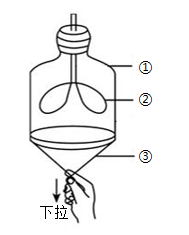
A. ①代表胸廓B. ②代表肺
C. ③代表膈肌D. 图中所示为呼气过程
【答案】D
【解析】
【分析】肺泡与外界的气体交换，又叫肺的通气，是通过呼吸运动实现的。吸气时，肋间肌和膈肌收缩；呼气时，肋间肌和膈肌舒张。
【详解】ABC．结合题图可知，模型中的①玻璃瓶模拟胸廓，②气球模拟肺，③橡皮膜模拟膈，故ABC正确。
D．膈肌与肋间肌收缩，引起胸腔前后、左右及上下径均增大，膈肌顶部下降，胸廓的容积扩大，肺随之扩张，造成肺内气压减小，小于外界大气压，外界气体进入肺内，完成吸气。结合题图可知，模型中的橡皮膜（模拟膈肌）收缩下降，胸廓容积增大，肺扩张，肺内气压降低，所以此时演示的是吸气过程，故D错误。
故选D。
21. 下图是人体泌尿系统组成图，下列说法正确的是（ ）
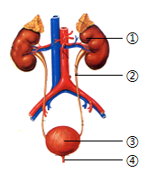
A. ①是肾脏，其主要功能是形成尿液
B. ②是尿道，其主要功能是输送尿液
C. ③是膀胱，能产生原尿
D. ④是输尿管，能排出尿液
【答案】A
【解析】
【分析】泌尿系统是由①肾脏、②输尿管、③膀胱、④尿道组成。
【详解】A．①是肾脏，是主要的泌尿器官，其主要功能是形成尿液，A正确。
B．②输尿管的作用是输送尿液到膀胱，B错误。
C．③膀胱可以暂时储存尿液，C错误。
D．④尿道的作用是将尿液排出体外，D错误。
故选A。
22. 植入人工耳蜗可以帮助部分耳聋患者恢复听力，耳蜗在听觉形成过程中的作用是（ ）
A. 接受振动刺激，产生兴奋
B. 接受声波刺激，形成听觉
C. 将振动转化成声波向内传递
D. 将声波转化成振动向内传递
【答案】A
【解析】
【分析】听觉的形成过程是：外界的声波经过外耳道传到鼓膜，引起鼓膜的振动；振动通过听小骨传到内耳，刺激耳蜗内的听觉感受器，产生神经冲动；神经冲动通过与听觉有关的神经传递到大脑皮层的听觉中枢，就形成了听觉。
【详解】据分析可见：耳蜗的作用是接受振动刺激，产生神经冲动，被称为听觉感受器。听觉是在大脑的听觉中枢形成的；将声波转化为振动是鼓膜和听小骨的作用，故BCD错误，A正确。
故选A。
23. 甲亢是一种内分泌系统疾病，是由下列哪种激素分泌异常导致的（ ）
A. 胰岛素B. 甲状腺激素
C. 性激素D. 生长激素
【答案】B
【解析】
【分析】激素是由内分泌腺的腺细胞所分泌的、对人体有特殊作用的化学物质。它在血液中含量极少，但是对人体的新陈代谢、生长发育和生殖等生理活动，却起着重要的调节作用，激素分泌异常会引起人体患病。
甲亢是由于甲状腺激素分泌过多引起的疾病。
【详解】A．胰岛素分泌异常导致糖尿病，与甲亢无关，故A不符合题意。
B．甲状腺激素分泌过多引发甲亢，故B符合题意。
C．性激素异常影响生殖功能，与甲亢无关，故C不符合题意。
D．生长激素异常导致侏儒症或巨人症，与甲亢无关，故D不符合题意。
故选B。
24. 青春期是人一生中重要的发育时期，下列相关叙述正确的是（ ）
A. 男性和女性在青春期出现第一性征
B. 青春期生殖器官发育成熟，具有了生殖能力
C. 青春期心脏功能增强、呼吸功能减弱
D. 青春期脑重量和脑神经细胞数量显著增加
【答案】B
【解析】
【分析】青春期是身体发育和性成熟的关键阶段，主要特征包括身高突增、生殖器官成熟、第二性征出现及心肺功能增强等。
【详解】A．第一性征是出生时即存在的生殖器官差异，而青春期出现的是第二性征，故A不符合题意。
B．青春期生殖器官发育成熟，具备生殖能力，这是青春期的核心特征，故B符合题意。
C．青春期心脏功能和呼吸功能均显著增强（如心输出量增加、肺活量增大），而非减弱，故C不符合题意。
D．脑的重量和神经细胞数量在儿童期已接近成人水平，青春期主要为功能完善，故D不符合题意。
故选B。
25. 2025年，中国科学院动物研究所科研团队在密云区潮白河等水域采集并确认了北京花鳅（Cobitis beijingensis）这一鱼类新物种，这是在全球范围内首次以新式拼音“Beijing”命名的鱼类物种，下列相关叙述正确的是（ ）
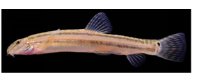
A. “Cobitis”为北京花鳅学名的种加词
B. 北京花鳅用肺呼吸
C. 北京花鳅体外受精、卵生
D. 北京花鳅的心脏有两个心房一个心室
【答案】C
【解析】
【分析】（1）鱼类的主要特征：生活在水中，体表常有鳞片覆盖，用鳃呼吸，通过尾部和躯干部的摆动以及鳍的协调作用游泳。
（2）双名法又称二名法，是林奈提出的，以拉丁文表示，通常以斜体字或下划双线以示区别。第一个是属名，是主格单数的名词，第一个字母大写；后一个是种名，常为形容词，须在词性上与属名相符。
【详解】A．动物的学名由两部分组成，第一个是属名，第二个是种加词，北京花鳅的学名是Cobitis beijingensis，“Cobitis”为北京花鳅学名的属名，A错误。
B．北京花鳅是鱼类，生活在水中，用鳃呼吸，B错误。
C．北京花鳅是鱼类，鱼类的生殖方式为体外受精，卵生，C正确。
D．鱼类的心脏结构属于单循环系统，较为原始。其心脏主要由一个心房和一个心室构成，D错误。
故选C。
第二部分
本部分共5题，共35分。
26. 庞各庄金把黄鸭梨果形美观，鸭头状凸起明显，果皮呈金黄色，有浓郁的香味，是全国农产品地理标志，回答问题。
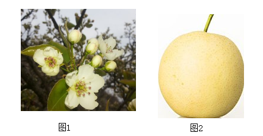
（1）金把黄鸭梨花（图1）具有芳香气味及蜜腺，花粉较重且柱头黏性大，推测其主要依靠______（填“风媒”或“虫媒”）传粉，当金把黄鸭梨的花完成了传粉和______后，雌蕊子房中的______会发育为种子。
（2）生物小组同学为探究梨种子萌发的环境条件，设计并实施了下表中的实验
培养皿编号 | 1号 | 2号 | 3号 | 4号 |
种子数量（粒） | 50 | 50 | 50 | 50 |
温度（°C） | 25 | 25 | 0 | 25 |
处理方式 | 放在干燥纱布上 | 放在潮湿纱布上 | 放在潮湿纱布上 | 浸没在水中 |
种子萌发数（粒） | 0 | 48 | 0 | ？ |
①实验中应选择形状、大小、饱满程度______的种子；探究温度对种子萌发的影响，应用______（填序号）两组培养皿作为对照实验。
②推测4号培养皿内种子的萌发数为______，理由是______。
【答案】（1） ①. 虫媒 ②. 受精 ③. 胚珠
（2） ①. 相同 ②. 2、3 ③. 0 ④. 种子浸没在水中，缺少空气
【解析】
【分析】（1）绿色开花植物经过开花、传粉和受精，才能结出果实和种子。开花和结果是一个连续的过程。被子植物生长到一定时期就会开花，开花的主要目的是把花蕊显露出来，以便于传粉；传粉是花粉从花药落到雌蕊柱头上的过程。花粉落到柱头上后会萌发出花粉管，花粉管延伸到胚珠内部，释放出精子和胚珠里的卵细胞结合，形成受精卵，这是受精过程。在完成传粉和受精两个重要的生理过程以后，花的大部分结构凋落，只有子房继续发育，最终子房发育成果实，子房壁发育成果皮，胚珠发育成种子，珠被发育为种皮，受精卵发育为胚。
（2）种子萌发的环境条件为一定的水分、适宜的温度和充足的空气；自身条件是胚是完整的、胚是活的、种子不在休眠期以及胚发育所需的营养物质。
（3）对照实验：在探究某种条件对研究对象的影响时，对研究对象进行的除了该条件不同以外，其他条件都相同的实验。
【小问1详解】
花的传粉方式有自花传粉和异花传粉两种，根据传粉媒介不同，花又分为风媒花和虫媒花。虫媒花的特征是：花朵大而有颜色鲜艳的花冠，具有芳香的气味及甜美的花蜜；风媒花的特征是：花朵比较小，不鲜艳，没有芳香的气味和甜美的花蜜，花粉多、小而轻，容易随风飘落，柱头有分叉并且分泌粘液黏住花粉。金把黄鸭梨的花具有芳香气味及蜜腺，花粉较重且柱头黏性大，符合虫媒花的特征，推测其主要依靠虫媒传粉。绿色开花植物经过开花、传粉和受精，才能结出果实和种子。当金把黄鸭梨的花完成了传粉和受精后，子房中的胚珠发育成种子。
【小问2详解】
实验的目的是探究种子萌发的环境条件，为保证单一变量，种子的形状、大小、饱满程度应相同。2、3组的变量是温度，可以探究温度对种子萌发的影响。种子萌发需要一定的水分、适宜的温度和充足的空气，4号培养皿内种子浸没在水中，缺少空气，因此，4号培养皿内种子的萌发数为0。
27. 小麦是我国重要的粮食作物之一，是面粉的主要原料。小麦穗可分为有芒和无芒（图1）两种类型，科研人员用有芒小麦与无芒小麦杂交，过程及结果见图2，回答问题。
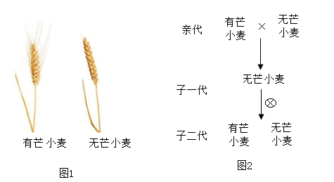
（1）小麦穗的有芒和无芒是一对______，根据图2信息可知，无芒是______性状。
（2）基因的载体是细胞核中的______，若用D和d表示控制该性状的基因，则子一代小麦的基因组成是______；子二代中有芒小麦的基因组成是______。
（3）自然界中，无芒小麦易被鸟类摄食，有芒小麦数量逐渐占优势，从生物进化角度分析，这是______的结果。
【答案】（1） ①. 相对性状 ②. 显性
（2） ①. 染色体 ②. Dd ③. dd
（3）自然选择
【解析】
【分析】生物体的性状是由基因控制的，当控制某种性状的一对基因都是显性或一个是显性、一个是隐性时，生物体表现出显性基因控制的性状；当控制某种性状的基因都是隐性时，隐性基因控制的性状才会表现出来。
在一对相对性状的遗传过程中，子代个体中出现了亲代没有的性状，新出现的性状一定是隐性性状，亲代的基因组成是杂合体。
【小问1详解】
生物体的形态特征、生理特征和行为方式叫做性状，同种生物同一性状的不同表现形式叫做相对性状；小麦穗的有芒和无芒是同种生物的同一性状的不同表现形式，属于相对性状。
子一代都是无芒小麦，子二代中出现了有芒小麦，说明无芒是显性性状。
【小问2详解】
细胞核中含有遗传物质（DNA），是细胞生命活动的控制中心，是遗传信息库。细胞核控制着生物的发育和遗传。细胞核中的染色体主要是由DNA分子和蛋白质分子构成的，DNA是细胞生物的遗传物质，故染色体是遗传物质的主要载体。
若用D和d表示控制该性状的基因，则子一代小麦的基因组成是Dd；子二代中有芒小麦的基因组成是dd。如图所示：
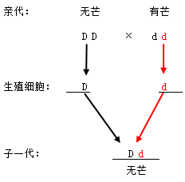
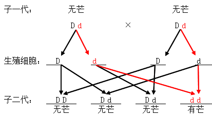
【小问3详解】自然界中的生物，通过激烈的生存斗争，适应者生存下来，不适应者被淘汰，这就是自然选择。自然选择的主要内容是：过度繁殖、生存斗争、遗传和变异、适者生存。
自然界中，无芒小麦易被鸟类摄食，而有芒小麦由于有芒而不易被鸟类摄食，导致有芒小麦在自然选择中逐渐占优势。从生物进化的角度分析，这是自然选择的结果。
28. 甲型流感是一种常见的季节性流感，是由甲型流感病毒感染引起的急性呼吸道传染病，患者会出现发热、咳嗽、咽痛等症状，回答问题。
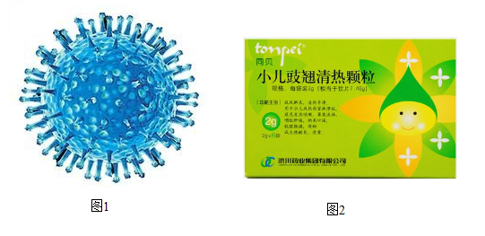
（1）甲型流感病毒（图1）是引起甲型流感的______，该病毒由蛋白质外壳和______构成。
（2）在甲型流感流行期间，各班经常开窗通风、按规定喷洒消毒水，从传染病的预防措施分析，这属于______。
（3）每年秋天学校都会组织学生接种甲型流感疫苗，接种后体内会产生一种针对甲型流感病毒的蛋白质即______，使得机体产生______免疫（填“特异性”或“非特异性”）。
（4）磷酸奥司他韦作为一种广泛使用的抗流感病毒药物，在一定程度上能够缩短病程和减轻症状；小儿豉翘清热颗粒（图2）是一种有较少副作用的治疗感冒的中药复方制剂。科研人员研究了不同用药方式对甲型流感症状的缓解效果，研究过程和结果见下表，据结果可知______用药方式能够更好的缓解症状，在用药时，患者应______（写出一点即可），以保证安全用药。
用药方式 | 症状及持续天数（天） |
流涕 | 咳嗽 | 发热 | 咽部充血 |
磷酸奥司他韦 | 3.03 | 6.87 | 3.79 | 4.62 |
联合使用磷酸奥司他韦和小儿豉翘清热颗粒 | 1.97 | 4.54 | 1.85 | 2.68 |
【答案】（1） ①. 病原体 ②. 遗传物质 （2）切断传播途径
（3） ①. 抗体 ②. 特异性
（4） ①. 联合使用磷酸奥司他韦和小儿豉翘清热颗粒 ②. 仔细阅读说明书、遵医嘱等
【解析】
【分析】（1）传染病是由病原体（细菌、病毒、寄生虫等）引起的、能在人与人之间或人与动物之间传播的疾病。传染病能够在人群中传播流行，必须同时具备传染源、传播途径和易感人群三个基本环节。传染病的预防措施可以分为控制传染源、切断传播途径和保护易感人群三个方面。
（2）免疫分为非特异性免疫和特异性免疫。
【小问1详解】
病原体是指引起传染病的细菌、病毒和寄生虫等生物。甲流感冒是由甲型流感病毒感染引起的急性呼吸道传染病。甲型流感病毒是引起甲型流感的病原体。病毒没有细胞结构，仅由蛋白质外壳和内部的遗传物质构成。
【小问2详解】
传染病的预防措施包括控制传染源、切断传播途径、保护易感人群等措施。传播途径是指病原体离开传播源到达健康人所经过的途径，如病人的排泄物，分泌物和传播疾病的生物或非生物媒介等，甲型流感的传播途径是空气和飞沫，因此，各班经常开窗通风、按规定喷洒消毒水，从传染病的预防措施分析，这属于切断传播途径。
【小问3详解】
病原体侵入人体后，能够刺激淋巴细胞产生一种抵抗该病原体的特殊蛋白质——抗体。引起人体产生抗体的物质叫抗原，某种抗体只与刺激它产生的那种抗原结合，促进吞噬细胞吞噬病原体。甲型流感疫苗接种后，人体会产生一种针对甲型流感病毒的蛋白质即抗体。产生抗体，消灭抗原，是出生后才有的，只能对特定的病原体有防御作用，是患过这种病或注射过疫苗后获得的，这种免疫只针对一种或几种特定的病原体有免疫作用，属于特异性免疫。
【小问4详解】
由结果可知，联合使用磷酸奥司他韦和小儿豉翘清热颗粒的用药方式使患者的症状持续天数更少，因此，联合使用磷酸奥司他韦和小儿豉翘清热颗粒的用药方式能够更好的缓解症状。用药时，要仔细阅读药品说明书，遵医嘱用药，以保证安全用药。
29. 泡菜是一种历史悠久、风味独特的发酵食品，但泡菜在发酵过程中会产生对人体有害的亚硝酸盐。为探究影响泡菜亚硝酸盐浓度的因素，研究人员分别用白菜、菜花、芹菜、萝卜制作泡菜，每日测定泡菜亚硝酸盐浓度，实验结果如下图，回答问题。
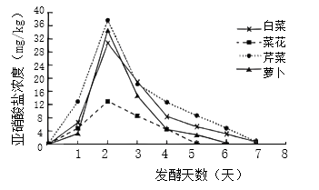
（1）制作泡菜利用的微生物主要是______，制作泡菜需要选择合格的泡菜坛，并用水封的方式密闭处理，以保证坛内发酵所需的______环境。
（2）本实验探究影响泡菜亚硝酸盐浓度的因素是______。实验结果表明，在四组实验中，泡菜亚硝酸盐浓度均呈现______的趋势，高峰都在第______天出现。
（3）通过分析实验结果，你推荐用______制作泡菜，推荐的理由是______。
【答案】（1） ①. 乳酸菌 ②. 无氧
（2） ①. 蔬菜的种类 ②. 先升高后下降 ③. 2
（3） ①. 菜花 ②. 用菜花制作的泡菜的亚硝酸盐含量最低
【解析】
【分析】（1）微生物的发酵在食品的制作中有重要的应用，如制作酸奶和泡菜要用到乳酸菌。
（2）对照实验：在研究一种条件对研究对象的影响时，所进行的除了这种条件不同外，其他条件都相同的实验。
【小问1详解】
腌制泡菜是利用乳酸菌发酵产生乳酸，乳酸菌在无氧条件下能将葡萄糖分解成乳酸，使泡菜具有独特的风味和酸脆的口感。用水封的方式密闭处理泡菜坛的目的是为了防止外界空气进入泡菜坛，从而保持坛内的无氧环境，因为乳酸菌是厌氧菌，在无氧条件下才能正常发酵。
【小问2详解】
从图中看，本实验的变量是蔬菜的种类，因此，本实验探究影响泡菜亚硝酸盐浓度的因素是蔬菜的种类。实验结果表明，在四组实验中，泡菜亚硝酸盐浓度均呈现先上升后下降的趋势，高峰都在第2天出现。
【小问3详解】
4种蔬菜中，菜花制作的泡菜的亚硝酸盐含量比较低，可见菜花最合适作为泡菜原料。
30. 阅读科普文，回答问题。
水葫芦也叫凤眼莲，原产于巴西，为多年生水生草本植物。水葫芦的叶直立光滑，根在水中，叶柄中部以下膨大呈葫芦状，这种结构内部充满空气，使其能在水中漂浮。水葫芦可以通过茎的分枝形成新的植株，除此外还可以产生大量种子，通过种子进行繁殖。
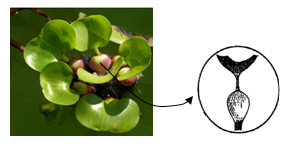
水葫芦在20世纪初被引入我国，后来被广泛用于饲料生产，随着饲料业的发展，人们不需要用其作为饲料原料了。由于是外来物种，在我国没有天敌，繁殖能力强，这使得水葫芦具备极强的扩散能力，进入水域后会大量繁殖，覆盖水面，水中的含氧量降低，影响了鱼类等水生动物的生存，严重破坏了水域生态系统的平衡。
科研人员在原产地发现了水葫芦的天敌——水葫芦象甲。水葫芦象甲是一种专门以水葫芦为食的昆虫，不会对其他水生植物造成危害。其发育过程经历受精卵、幼虫、蛹和成虫四个阶段，幼虫食用水葫芦叶柄和幼嫩的茎，成虫专以其叶片为食，引入水葫芦象甲后能有效控制水葫芦的数量。
科研人员还发现水葫芦无法跨越物理障碍进行繁殖，其茎和叶很脆弱，一旦遇到障碍物，就会被阻挡或损坏。根据这点，人们用围栏把水葫芦围起来，形成一个封闭的空间，当水葫芦密度过高时，就无法充分获得生长所需的光照、无机盐等，使其无法进行有效的繁殖和扩散。因此，用围栏把水葫芦围起来，可以有效地控制其生长速度，甚至会使水葫芦逐渐死亡。
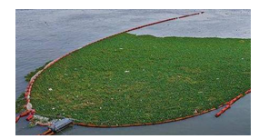
经过我国科学家多年的研究和地方政府的专项治理，现如今许多地方的水葫芦已经得到了有效控制。
（1）水葫芦生活在水域生态系统中，这个生态系统是由水域中的所有生物与______共同组成的，水葫芦在生态系统成分中属于______。
（2）水葫芦的生殖方式除有性生殖外，还包括无性生殖中的______生殖；水葫芦泛滥使水中含氧量降低，破坏水域生态平衡，请你写出水中含氧量降低的原因______。
（3）水葫芦象甲的发育过程属于______发育（填“完全变态”或“不完全变态”）；人们用围栏把水葫芦围起来，形成一个封闭的空间，使其无法进行有效的繁殖和扩散，这是利用了种内关系中的______。
（4）为了避免外来物种对本地生态环境产生不利影响，请你提出相应建议：______（写出两点）。
【答案】（1） ①. 非生物 ②. 生产者
（2） ①. 营养 ②. 水葫芦大量繁殖，覆盖水面，遮挡阳光，水中的植物无法进行光合作用制造氧气，使水中的含氧量降低
（3） ①. 完全变态 ②. 竞争
（4）完善外来物种管理法律法规，严格规范引入程序；加强边境检疫和市场监管，防止无意引入；建立入侵物种监测预警和快速反应机制；提高公众生态安全意识，鼓励举报违规行为；加强国际合作，共享防治技术和信息；开展生态修复，清除已入侵物种
【解析】
【分析】（1）外来物种入侵是威胁生物多样性的原因之一。如果盲目引入国外的稀有物种可能会对本地的生态系统造成破坏，如竞争排斥、捕食本地物种、传播疾病等，从而导致本地生物多样性的减少。因此，引入国外的稀有物种并不是保护生物多样性的有效措施，反而可能带来负面影响。
（2）生态系统由生物部分和非生物部分组成，生物部分包括生产者（主要是植物）、消费者（主要是动物）、分解者（主要是细菌、真菌）；非生物部分有阳光、空气和水等。
（3）在由受精卵发育成新个体的过程中，幼虫与成虫的形态构造和生活习性差异很大，这种发育过程称为变态发育，分为完全变态发育和不完全变态发育。完全变态发育经过卵、幼虫、蛹和成虫等4个时期，如蚊子、苍蝇、家蚕、菜粉蝶等；不完全变态发育经过卵、若虫、成虫三个时期，如蟋蟀、螳螂、蝼蛄、蝗虫等。
【小问1详解】
生态系统由一定范围内的所有生物和非生物部分共同组成，生物部分包括生产者（主要是植物）、消费者（主要是动物）、分解者（主要是细菌、真菌），在生态系统中，植物能够通过光合作用制造有机物，有机物中储存着来自阳光的能量，制造的有机物不仅提供给植物自身，也是动物的食物来源，因此植物是生态系统的生产者，水葫芦在生态系统中的成分是生产者。
【小问2详解】
不经过两性生殖细胞的结合，由母体直接产生新个体的生殖方式叫做无性生殖，植物利用根、茎、叶等营养器官繁殖后代的方式成为营养生殖，属于无性生殖。水葫芦可以通过产生种子进行有性生殖，还可以通过茎的分枝形成新的植株，这属于无性生殖中的营养生殖。水中的植物进行光合作用，释放氧气，光合作用需要光，水葫芦泛滥后覆盖水面，遮挡阳光，水中的植物无法进行光合作用制造氧气，使水中的含氧量降低。
【小问3详解】
水葫芦象甲的发育过程经历受精卵、幼虫、蛹和成虫四个阶段，属于完全变态发育。根据题意，人们用围栏把水葫芦围起来，形成一个封闭的空间，当水葫芦密度过高时，就无法充分获得生长所需的光照、无机盐等，使其无法进行有效的繁殖和扩散。这利用了种内关系中的竞争。
【小问4详解】
为了避免外来物种对本地生态环境产生不利影响，可采取以下措施：完善外来物种管理法律法规，严格规范引入程序；加强边境检疫和市场监管，防止无意引入；建立入侵物种监测预警和快速反应机制；提高公众生态安全意识，鼓励举报违规行为；加强国际合作，共享防治技术和信息；开展生态修复，清除已入侵物种。